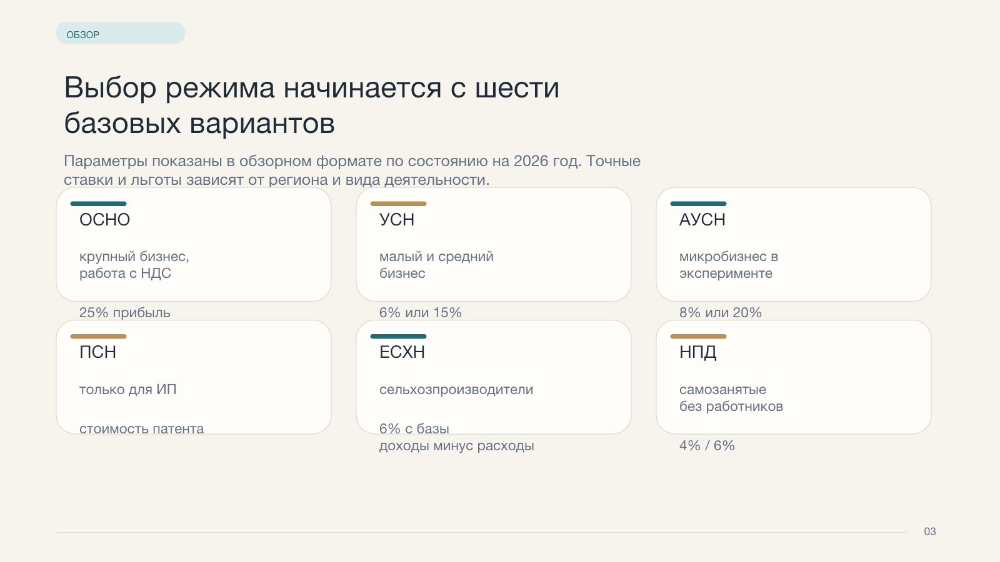
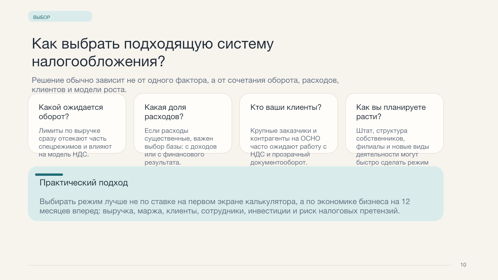
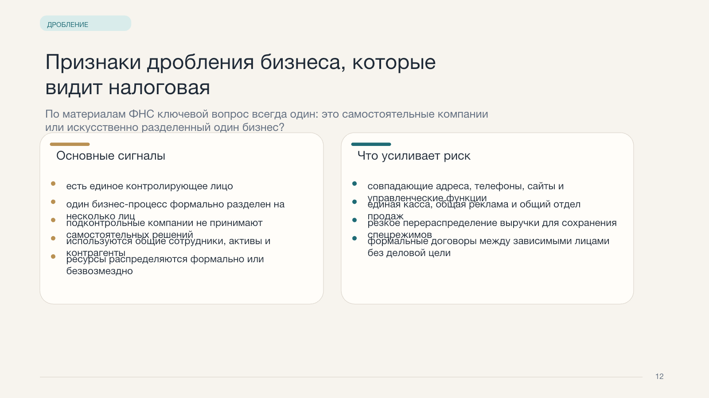
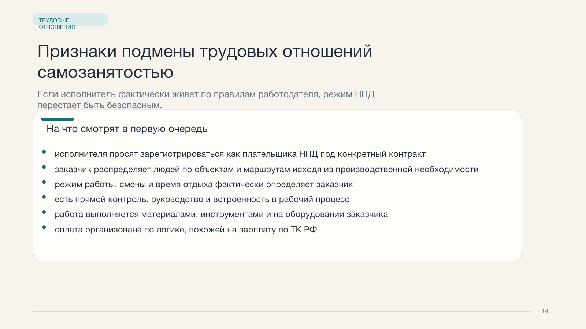
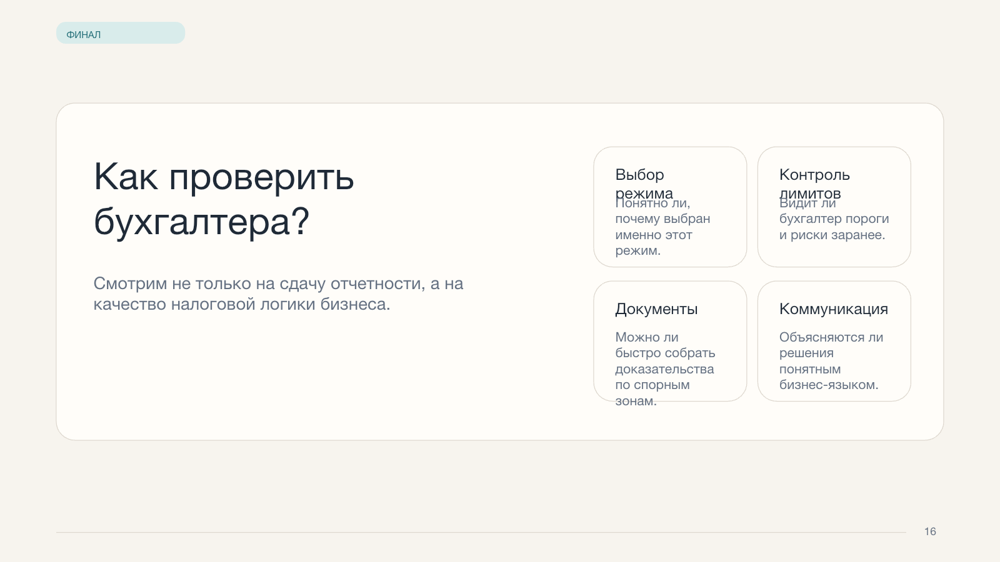

Материал для выступления перед студентами
16
готовых слайдов
6
налоговых режимов
2
ключевые зоны риска
Системы налогообложения. Триггерные точки. Пути решения.
Страница собрана на основе техзадания и референсных слайдов: сложная налоговая тема упакована в понятную, визуально спокойную и современную подачу для учебной аудитории.
Задача страницы
Показать студентам не только виды режимов, но и логику ошибок, которые дорого обходятся бизнесу.
Понятный вход
Без перегруза нормами и длинными таблицами. Сначала базовая карта темы, потом детали.
Практический контекст
Каждый режим объясняется через реальную пользу, ограничения и риск неправильного применения.
Подготовка к практике
Финальные блоки помогают увидеть, что налоговая проверяет на деле: дробление и подмену трудовых отношений.
Структура
Как выстроена презентация для студенческой аудитории
Знакомство с экспертом и темой
Первый экран задает доверие, контекст и объясняет, зачем вообще разбираться в режимах налогообложения.
Карта налоговых режимов
Краткий обзор всех систем, чтобы у студентов сложилась цельная картина до ухода в детали.
Разбор каждого режима
ОСНО, УСН, АУСН, ПСН, ЕСХН и НПД показаны через формулу: когда подходит, в чем плюс, где риск.
Выбор режима и триггерные точки
Переход от теории к мышлению предпринимателя: как выбирать и где чаще всего совершаются ошибки.
Проверки и спорные зоны
Дробление бизнеса и трудовые отношения вынесены в отдельные спокойные слайды без текстовой простыни.
Режимы
Шесть базовых систем показаны как карта решений, а не как набор терминов
Для бизнеса, где важны НДС, крупные заказчики и отсутствие лимитов по масштабу.
Ключевой режим малого и среднего бизнеса: проще учет, но критичен правильный выбор объекта.
Максимально автоматизированная модель для микробизнеса с жесткими ограничениями по структуре.
Фиксированная логика налога для ИП, если доход по деятельности достаточно предсказуем.
Специальный режим для сельхозпроизводителей, а не универсальная налоговая льгота по отрасли.
Подходит только там, где человек действительно работает на себя, а не подменяет трудовой договор.
Риски
Самая сильная часть материала для студентов — не просто ставки, а понимание, где бизнес “ломается”
Триггерные точки режимов
- лимиты по выручке и штату
- ошибки в работе с НДС и налогом на прибыль
- слабый раздельный учет
- неверная модель работы с самозанятыми
Что особенно полезно студентам
- видеть связь между теорией и проверкой
- понимать, как документы выдают реальную модель бизнеса
- замечать риск до того, как придет инспекция
Итог подачи
Это не лекция “про налоги вообще”, а собранный учебный сценарий с понятным маршрутом внимания
Сначала студент понимает карту режимов. Потом учится выбирать. И только после этого видит, за что именно бизнес получает самые болезненные претензии.
Референсные изображения
Ключевые слайды финальной версии, на которых строится визуальная логика страницы
Слайд 1
Знакомство с экспертом и визуальная настройка тона всей презентации.

Слайд 3
Компактная карта всех режимов без перегруза деталями.

Слайд 10
Вопросный слайд, который переводит теорию в практику выбора.

Слайд 12
Спокойный разбор признаков дробления бизнеса в учебном формате.

Слайд 14
Слайд про подмену трудовых отношений самозанятостью.

Слайд 16
Финальный вопросный экран, который помогает завершить выступление без сухого “спасибо”.